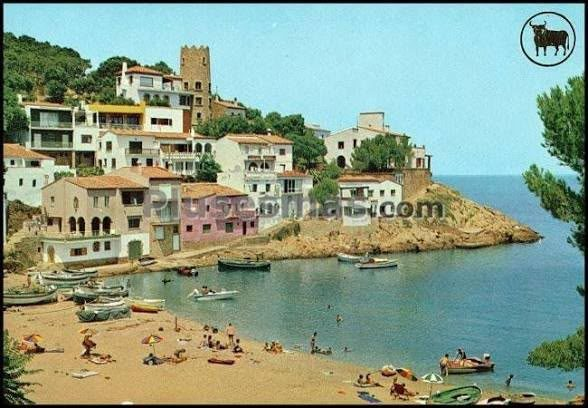
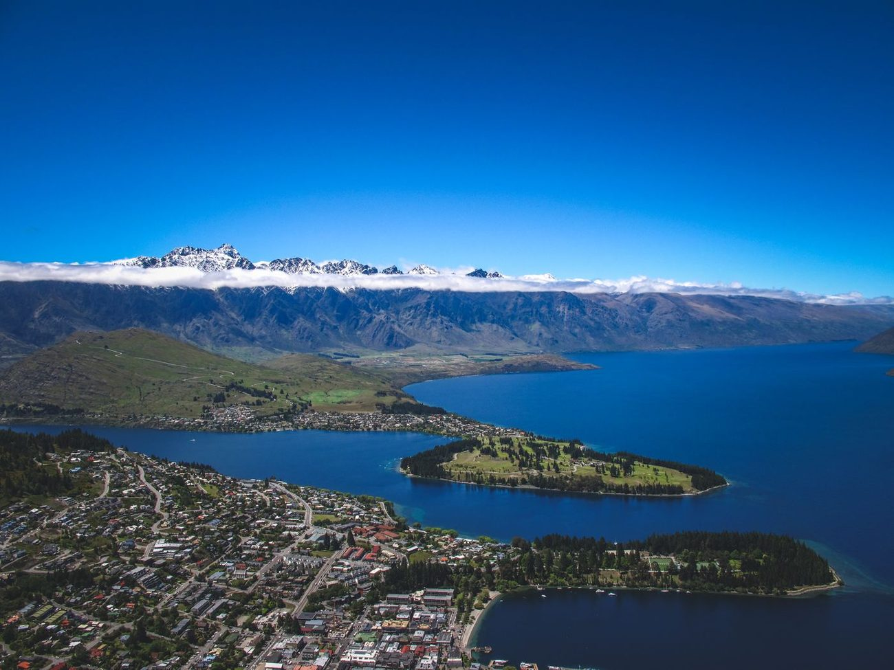

- Tipo / Type
- Turismo · Estudio
- Trámite
- Nacionalidades
- Modalidad
- Personalizada
- Contacto
- +595 994 465187
P<PRYCERTAIN<<ASESORIAS<MIGRATORIAS<Y<VISAS<<<<
Doc. 01 Asunción · Paraguay / Perú / Colombia
Asesorías migratorias y visas. Te acompañamos en visas de turismo y estudio para Australia, Nueva Zelanda, Canadá y Estados Unidos, y en nacionalidad italiana y española por descendencia.
P<PRYCERTAIN<<ASESORIAS<MIGRATORIAS<Y<VISAS<<<<
Cada caso es distinto: primero escuchamos tu situación y recién después armamos el camino.
Turismo y estudio para Australia, Nueva Zelanda, Canadá y Estados Unidos. Preparación del legajo, formularios y entrevista.
Italiana y española por descendencia: búsqueda y orden de la documentación de tus antepasados, paso a paso.
Trámites de residencia y acompañamiento en los requisitos migratorios de cada país.
Opciones para estudiar, trabajar o hacer una experiencia afuera, según tu perfil y tu objetivo.
Elegí el trámite que te interesa y mirá de qué se trata.
Turismo
Te ayudamos a armar el legajo de la visa de turismo: formulario, documentación de respaldo, turno y preparación para la entrevista consular. Sin sorpresas y con tus tiempos claros desde el principio.
Estudio
Asesoría para la visa de estudiante: elección del programa y la institución, cartas y documentación requerida, y el paso a paso de la solicitud. También para Canadá y Estados Unidos.
Ciudadanía
Reconstruimos la línea de descendencia y ordenamos las partidas y certificados que hacen falta. Te decimos desde el vamos qué documentos existen, cuáles hay que pedir y en qué orden.

Ciudadanía
Revisamos tu caso, identificamos la vía que te corresponde y preparamos la documentación necesaria para presentarla sin idas y vueltas.
Residencias
Asesoría en trámites de residencia: qué requisitos pide cada país, qué documentación tenés que reunir y cómo se ordena la presentación.

Experiencias
Si todavía no sabés cuál es tu camino, lo vemos juntos: destinos posibles, tipo de programa y qué necesitás para aplicar según tu perfil.
Asesorías migratorias y visas
Un trámite migratorio es papeles, tiempos y decisiones. Nuestro trabajo es que no los enfrentes solo.
CERTAIN · Paraguay / Perú / Colombia
Nos escribís por WhatsApp y nos contás a dónde querés ir y para qué. Sin vueltas.
Revisamos tu situación y te decimos qué trámite corresponde y qué documentación vas a necesitar.
Preparamos formularios y documentación, y te preparamos para la entrevista cuando el trámite la pide.
Acompañamos cada etapa y te avisamos qué sigue en cada momento.
Opiniones
Me guiaron en todo el proceso y pude resolver mi visa mexicana sin volverme loca con los papeles.
Tenía mil dudas con la visa canadiense y me explicaron cada paso hasta que salió. Súper atentos siempre.
La entrevista para la visa americana me daba nervios y llegué preparado. Recomiendo totalmente.
Trabajamos trámites para destinos de América del Norte, Oceanía y Europa.
Atendemos desde Asunción, Paraguay, y también tomamos casos de Perú y Colombia. Los trámites son principalmente para Estados Unidos, Canadá, Australia y Nueva Zelanda, además de las nacionalidades italiana y española.
No. La decisión siempre es del consulado o de la autoridad migratoria de cada país. Lo que hacemos es preparar tu caso de la mejor manera posible: documentación completa, formularios correctos y preparación para la entrevista.
Depende del país, del tipo de trámite y de la disponibilidad de turnos. En la primera consulta te damos una estimación realista para tu caso puntual.
Es lo más común. Parte del trabajo es justamente identificar qué partidas existen, dónde están y cómo solicitarlas. Empezamos por lo que tengas, aunque sea un nombre y una fecha aproximada.
Sí. La mayor parte del proceso se hace por WhatsApp y correo, con envío digital de la documentación.
Escribinos por WhatsApp contándonos a dónde querés ir y para qué. Con eso te decimos qué trámite corresponde y cómo seguimos.
Primer paso
Te respondemos por WhatsApp y armamos juntos el camino que corresponde a tu caso.
Escribir por WhatsAppAsunción, Paraguay
Perú · Colombia